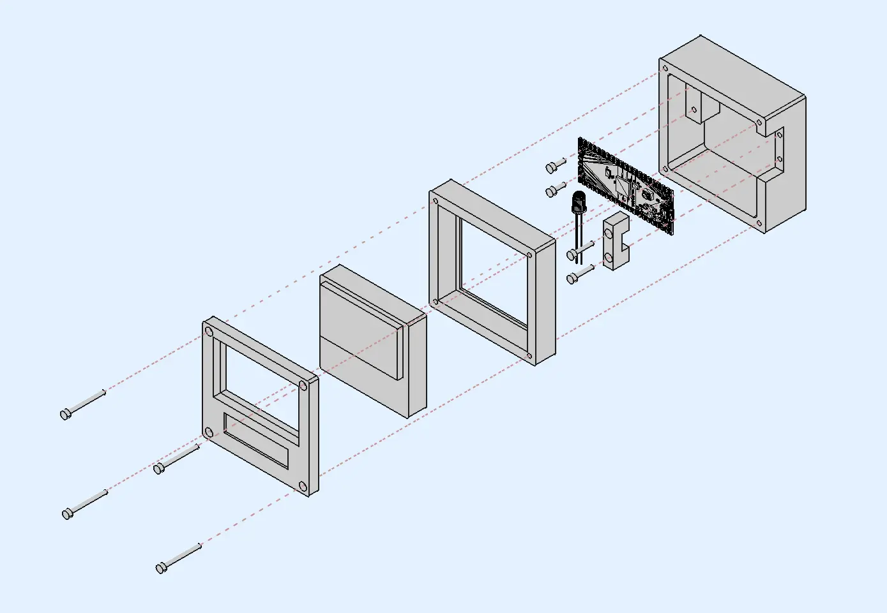
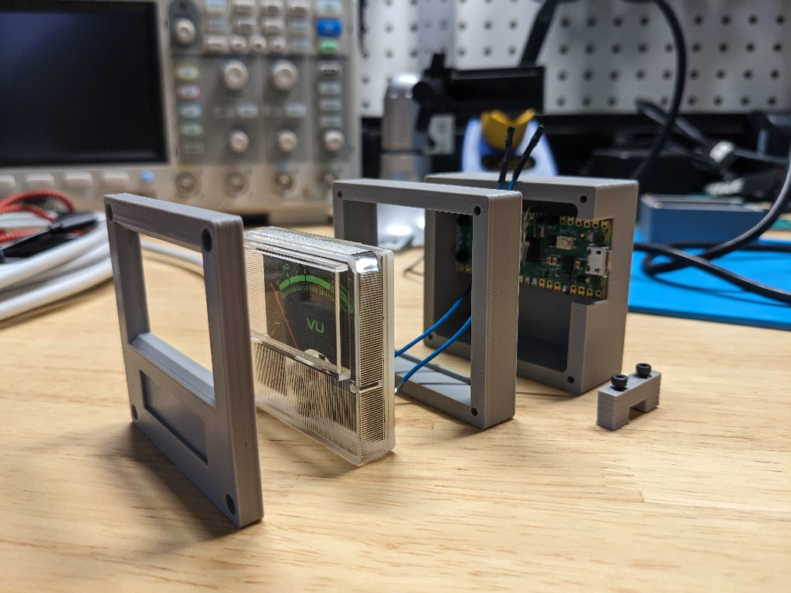

NuVu Meter

I had a few salvaged VU meters burning a hole in my proverbial pocket, so I decided to turn one into a readout for my home’s energy usage.
At a high level, I have an Emporia Vue 2 that publishes energy readings to a self-hosted MQTT server (this is not default behavior and required flashing custom config to the device). My self-hosted NodeRed instance listens for those messages, extracts the relevant data, and issues a new message with the total point-in-time energy usage as a percentage of the last day’s max usage (it also saves all of the data so I can view it in Grafana). A Raspberry Pi Pico W in the NuVu meter listens for those messages and then changes the needle position and backlight color accordingly.
Hardware⌗

The main inspiration for this project was an old VU meter I had scavenged from a tape deck, so that’s what dictated the form factor of the final product.
The electronics are very minimal - a Raspberry Pi Pico W (powered via USB) drives the RGB LED and the VU meter via PWM, and that’s all there is to it.
I chose the Pico W because it was cheap and available. There are plenty of other options in this space that also would’ve worked just as well, like the ESP32 or any of the other WiFi dev boards sold by Adafruit or Seeed Studio.
When designing the case, I wanted something that didn’t add too much bulk to the VU meter’s footprint. You can’t see it too well in the photos, but the coil that moves the needle sits at the bottom center and sticks out the back about 10mm, so that’s why the Pico is located in the top half of the enclosure rather than closer to the bottom. I’m not entirely happy with how the USB cable sticks out from the middle of the case, but it doesn’t pose any functional issues so I’ll learn to live with it.
The mounting hole placement on the Pico is not the greatest. The holes near the USB port are so close to the edge of the PCB that it makes mounting difficult, which is how I ended up with the filler block that just sits on top of the PCB and around the USB port.
I had also originally planned (and even tried) to use heat set inserts for the holes in the back cover, but I’m really bad at installing those so I opted for undersized holes that the screws sort of just self tap. It probably won’t hold up to too many disassemble/reassemble operations, but hopefully I won’t ever need to take it apart.
Software⌗
I originally started out using MicroPython to build a prototype and found the fast feedback loop absolutely wonderful. It was especially great for dialing in specific color values or needle positions.
That said, I wasn’t happy with the IDEs that were available, and I also struggled with confidently installing external packages (for MQTT). It seemed very easy for the code running on the device to get out of sync with the code on my host PC’s file system.
I considered a few alternatives and eventually landed on good ol’ Arduino. It’s still not perfect (dependency management seems environmental and not based on a “project”), but I was more comfortable with the end result.
There’s only about 100 lines of really straightforward code. The setup function configures output pins, connects to WiFi, connects to MQTT, and then registers a callback handler that runs when a message is received.
In response to a message, the callback parses the value received (0-100) and then modifies the needle position and LED color to reflect that value.

Resources⌗
The code, enclosure, and schematics are all on Github in case you want to use them as inspiration for your own project.